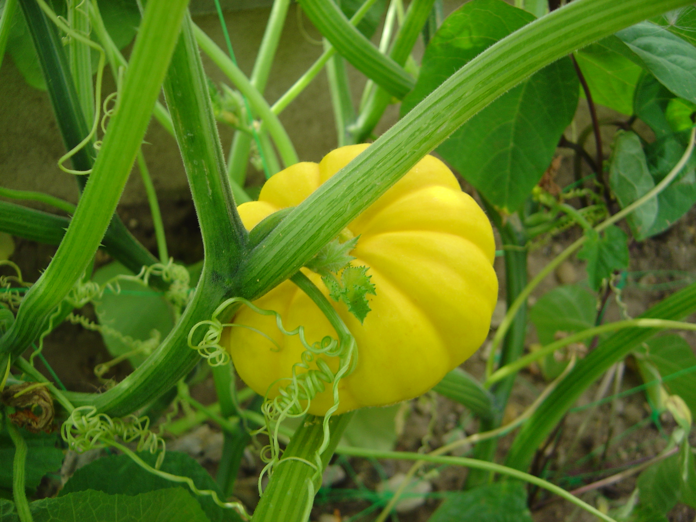
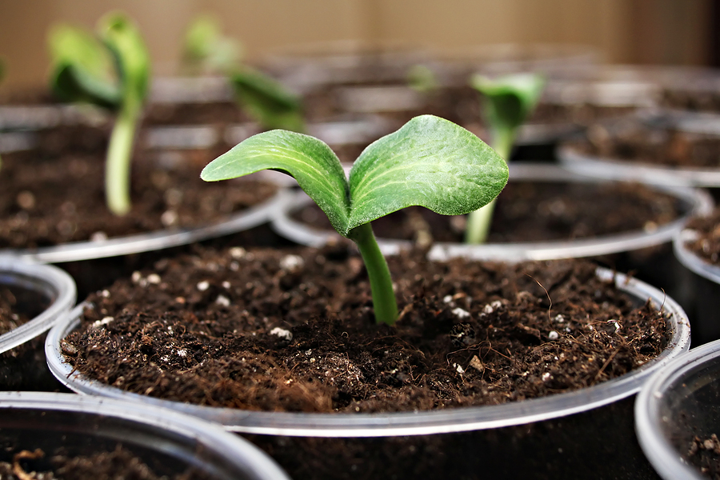
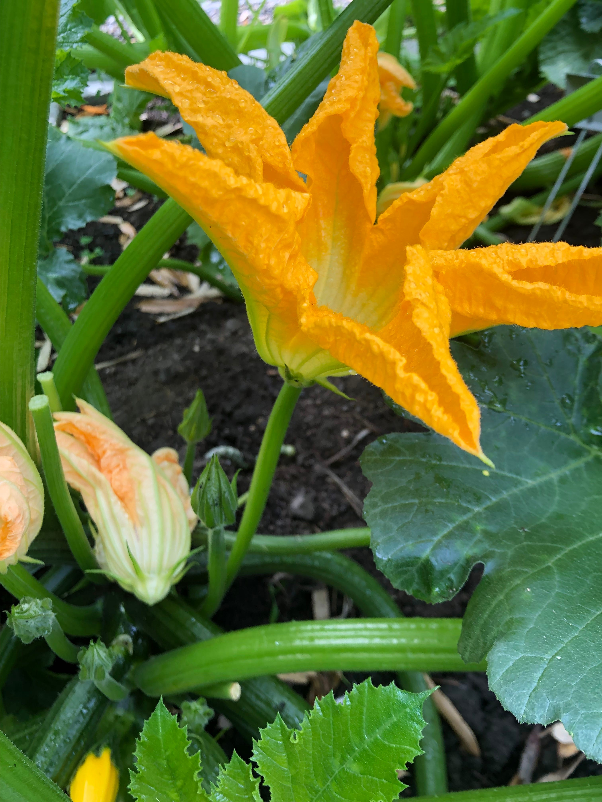
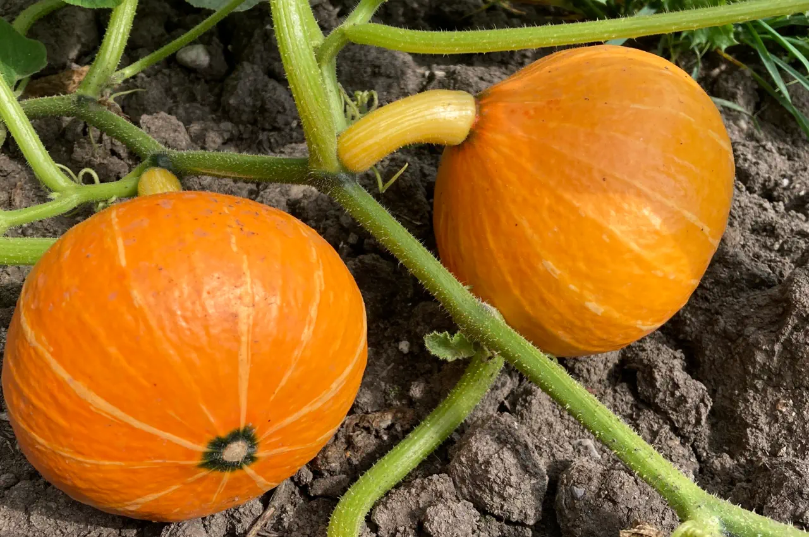

Squash
genus Cucurbita
Squash grows from seeds planted in warm soil, and the plant needs full sun, regular water, and space because it spreads out or climbs depending on the type.
Origins and History
Squash lives best in sunny gardens or farms with rich, well-drained soil and warm weather, and it is grown in many places because both summer and winter squash adapt well to different climates
Did You Know?
People use squash as food because it is nutritious, high in fiber, and a good source of vitamins like vitamin C and beta-carotene, and it can be cooked, roasted, mashed, or added to soups and other dishes.Farmers and gardeners also grow squash for harvest variety, and winter squash is especially valued because it stores well after picking and can be used for a long time.